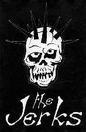
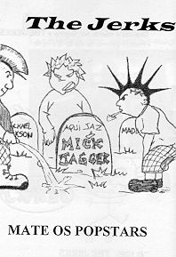

- 12 músicas (20 min) - |
|||||||||||||||||||||||||
|  |
|
||||||||||||||||||||||||
características:
| qualidade de gravação | adesivo | letras das músicas |
| boa | não | sim |
|
|
comentários:
" essa banda que fez seu primeiro show abrindo para o All You Can Eat, faz um punk rock básico, com letras fortes e às vezes irônicas. nessa sua primeira demo, há letras falando de mulheres, problemas sociais e diversão. essa fita de estréia atingiu cerca de 600 cópias distribuídas. como objetivo, divertir à todos, passando informações, e às vezes não. "